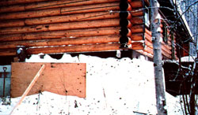
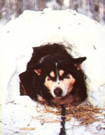

Because we wanted our snow wall to be as wide at the top as it is on the bottom, we packed te natural insulation behind a sheet of plywood. to keep the panel upright, we braced it with a pole and piled snow along its bottom .
One thing we've got plenty of during our Alaskan winters is snow! And although my sister Miki and I had often heard that trappers in these parts bank drifts up against the outside of their line cabins to keep the buildings warm, we'd never actually considered putting this technique to use on our own house ... until our furnace broke down for a month and left us with only a small Franklin stove to heat our 3,000-square-foot home. However, as the temperature outside dropped to a mean 30 below-and frost started to form inside the basement walls-we knew we'd better do something quick!
With the old trappers' trick in mind, then, we rushed outside and furiously shoveled up snow, packing it all the way around our house. And what do you know . . . it worked! Within no time the interior warmed up, and the frost just disappeared. And ever since that season, having become true believers in the practical as well as the economical (after all, it's free!) benefits of snow as insulation, we use it every year . . . for both our house in town and our wilderness trapping cabin.
Here's our contended sled dog Loki in his brand-new and renewable winter "digs".
To duplicate our success, you'll need to collect a board that measures about 4' X 6' (we use a sheet of plywood at home and an old beaverskin-stretching board at our cabin in the woods) . . . a pole that's long enough (and strong enough) to support the plank in a vertical position . . . a good sturdy snow shovel (or two if you've got some help!) . . . and-finally-a couple of heavy-duty snow-toting buckets on a sled.
In order to form your snow wall, you'll need a mold in which to pack the insulating material . . . and this is where the wooden panel comes in. Using a corner of your house as the starting point, stand the board upright-on its long edge-about two feet away from (and parallel to) one wall . . . then brace the plank with the pole, as shown in the accompanying photo.
Now, simply shovel snow into the "canyon" you've created between the plywood and your house. Be sure to pack the new wall down as you go, so that later-even in a strong wind-it won't all blow away.
When you finish filling in the first space, move the board and bracer on down the house and continue working in the same manner. If you run out of snow in the immediate shoveling vicinity, just slide out your trusty sled and buckets to haul in some more from elsewhere. Keep at it until you've completed a solid white "retrofit"roughly 2 feet thick and 4 feet tall-surrounding the whole outside of your home (leaving openings for your windows and doors, of course).
The main disadvantage of using snow for insulation is that it doesn't stick around all year long! Not only do you have to replace the frozen wall every winter, but also-at the first sign of spring thaw-you've got to get rid of that artificial drift in a hurry before moisture seeps into your house and ruins your woodwork.
However, when you consider all the benefits of this sort of winterization, the efforts of installing and uninstalling it seem pretty darn reasonable. So if you live in a climate where the winter temperature often hover... around the zero mark and there's no thaw till March, snow insulation may be just the cover-up you need to keep you and your family warm (and your heating budget in hand) this winter!
EDITOR'S NOTE: For more information about the practical uses of snow, turn to the article on page 64.
Not only is snow a super home insulator, but it can also be used to build a terrific doghouse. When the temperature outside plummets and your ordinarily happy-to-be-outdoors canine companion starts to shiver, merely pile up a mound of snow . . . pack it down well ... and allow it time to set. Once it's firm, pour water over the surface to keep it solid. Then, after the liquid freezes, simply carve out a pet-sized doorway and a "living room " inside .. . put down a little hay (or whatever) for bedding . . . and watch Fido snuggle in.
|
 |
 |
|